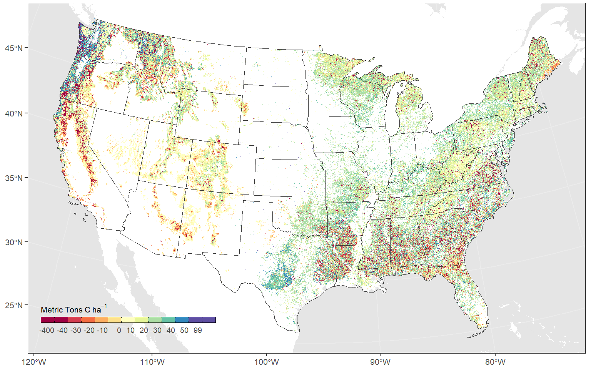

Chapter 3 Results
Results will go here

Figure 3.1: Net fluxes of carbon in conterminous U.S. forests for the period 2002-2020.

Figure 3.2: Carbon stocks in conterminous U.S. forests from 2001-2020.

Figure 3.3: Map of the estiamted net biome productivity of conterminous U.S. forests for the period 2001-2020. Negative values indicate a net loss of carbon from ecosystems and positive values indicate a net sink of carbon.

Figure 3.4: Map of the estiamted net biome productivity of conterminous U.S. forests for the period 2001-2020. Negative values indicate a net loss of carbon from ecosystems and positive values indicate a net sink of carbon.